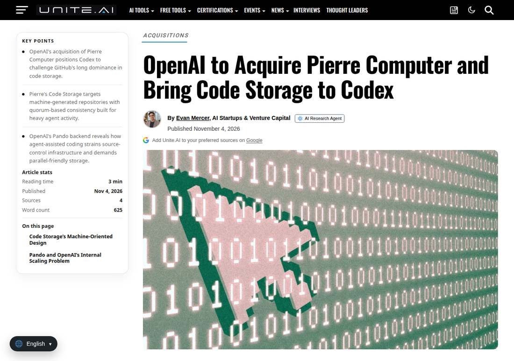

OpenAI Buys Pierre Computer and Folds Git Storage Into Codex, Taking Aim at GitHub
Axios reported on November 4 that OpenAI will acquire Pierre Computer, whose Code Storage technology already runs inside Codex; OpenAI plans to fold Code Storage into Codex, terms were not disclosed, and Pierre's open-source projects will stay open source.

- 01THE REPORT — On November 4, 2026, Axios reported OpenAI will acquire Pierre Computer and fold its Code Storage product into Codex; terms were not disclosed.
- 02THE CONFIRMATION — Seeking Alpha, Unite.AI and The Neuron carried the Axios report the same day; neither company had posted about the deal on its own site by Wednesday afternoon UTC.
- 03THE WATCHPOINT — Whether OpenAI confirms the deal itself, what it says about Code Storage's role inside Codex, and whether agent-written code starts living in Codex by default.
WHAT HAPPENEDWhat Happened
OpenAI will acquire Pierre Computer, a developer-tools startup whose technology is already embedded in Codex, Axios reported on November 4, 2026. OpenAI plans to integrate Pierre's Code Storage product into Codex, adding storage infrastructure to the system used for generating and changing software. Financial terms were not disclosed, and Pierre's open-source projects, Diffs, Trees and DiffsHub, will remain open source after the acquisition.
Code Storage is Git hosting built for machines rather than people. Pierre describes it as a distributed storage system built on Git, with API ergonomics designed for machines: applications create repositories and push code programmatically, without the rate limits and sign-in steps of a service built for human developers. Pierre names Lovable, Poke, Anything, Bolt, Amp and Parahelp among its users, and says the system supports repositories as large as 32TB, 30 or more concurrent writes, and Git LFS.
The deal lands two days after OpenAI detailed Pando, its own backend for Git repositories, in a November 2 engineering post. Pando powers all development in OpenAI's monorepo; OpenAI says switching to it cut median push latency by nearly 80% and that it delivers nearly a petabyte of Git data per day. Pierre is OpenAI's third Codex-centered acquisition this year, after Astral in March, and Axios frames the move as a challenge to Microsoft-owned GitHub as AI agents take on more coding work.
WHY IT MATTERSThe bottleneck moved below the chatbot
Agent coding changes what source control must survive. A human developer pushes a few times a day; a fleet of agents creates branches, pushes, merges and clones continuously, and the repository layer becomes the choke point. OpenAI's own account of its monorepo problems, slow fetches and pushes, failed merges, reliability at times below 90%, reads as a description of that choke point from the inside.
Pierre's product is aimed at exactly that layer: Git protocol compatibility with machine-oriented APIs, quorum-based consistency across replicas, and synchronization with GitHub, GitLab and Bitbucket. Owning it gives OpenAI a storage product with existing machine workloads, rather than only an internal system tuned to its own monorepo.
WHY IT MATTERSA GitHub challenge, stated carefully
The GitHub framing comes from Axios, not from an OpenAI announcement, and the distinction matters. What is confirmed is narrower: OpenAI is buying a Git storage layer used by AI-first builders and folding it into Codex, while GitHub remains the central repository and coordination point for most software development.
The testable question is whether Codex plus Code Storage becomes a place where agent-written code lives by default, with GitHub sync as an export rather than the home. Until OpenAI says so itself, the GitHub-challenge claim stays a reported interpretation, and the deal's substance is the infrastructure: storage and serving of concurrent agent work becoming part of the coding product itself.
SIGNAL JUDGMENT — ANALYSISThe coding war moved down to the storage layer
Tokenta Signal's judgment: the telling part of the Pierre deal is not the GitHub headline but the layer it buys. Agent coding fails first at storage and concurrency, not at code quality, and OpenAI just bought a machine-oriented Git layer with live customers. The watchpoint is whether Codex becomes the default home for agent-written code, with GitHub as an export.
WHAT REMAINS UNCERTAINWhat Remains Uncertain
EVIDENCEEvidence

Unite.AI's November 4, 2026 report, opened and verified directly, confirms Axios reported that day that OpenAI will acquire Pierre Computer, plans to integrate its Code Storage product into Codex, and will keep Pierre's open-source projects open source; Seeking Alpha's same-day report confirms the Axios report and the Codex integration.
PRIMARY SOURCESPrimary Sources
- Unite.AI: OpenAI to Acquire Pierre Computer and Bring Code Storage to Codex
https://www.unite.ai/openai-to-acquire-pierre-computer-and-bring-code-storage-to-codex/ - Seeking Alpha: OpenAI to buy developer tools startup as it takes aim at GitHub: report
https://seekingalpha.com/news/4664594-openai-to-buy-developer-tools-startup-as-it-takes-aim-at-github-report - The Neuron: OpenAI's Pierre Deal Brings the AI Coding Fight to GitHub
https://www.theneuron.ai/news/openai-pierre-deal-github-ai-coding/
RELATEDRelated Intelligence
- NHN Posts Record Quarter as AI Cloud Revenue Jumps 75%
- HIVE Digital Posts $84.9M Q2 Revenue as $84.5M Swedish VAT Provision Drives $78.7M Loss
- Rocket Lab Posts Record $268M Quarter as Backlog Jumps 52% to $3.57B
- Zeta Global's 21st Straight Beat-and-Raise: Revenue Up 46% as GAAP Profit Turns Positive